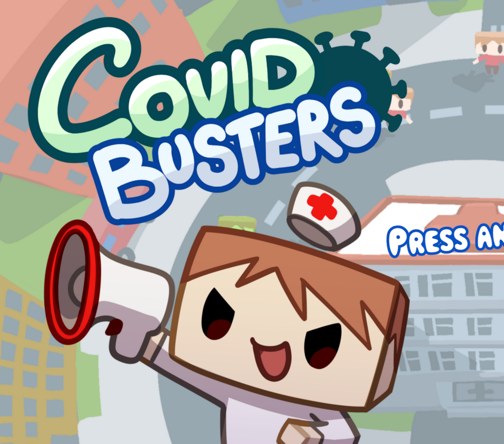

About me
Game programmer
Currently studying CMGT at Saxion University of Applied Sciences
In my free time I like to play games, make games, and play around in VR

Game programmer
Currently studying CMGT at Saxion University of Applied Sciences
In my free time I like to play games, make games, and play around in VR
An ongoing project of recreating the iconic Black Mesa tram ride in NeosVR, a virtual reality metaverse that allows for real time collaborative development.
The project is being developed by a team of 2 people, including myself.

A 2D platformer game made in 8 weeks in Unity for a school project, with a 6 person team.

A 3D top down casual game made in 3 weeks in Unity for a school project, with a 6 person team.
A social casual pool world made for NeosVR for people to socialize in.
Made for a competition in one month, with it we won first place in the social worlds category.